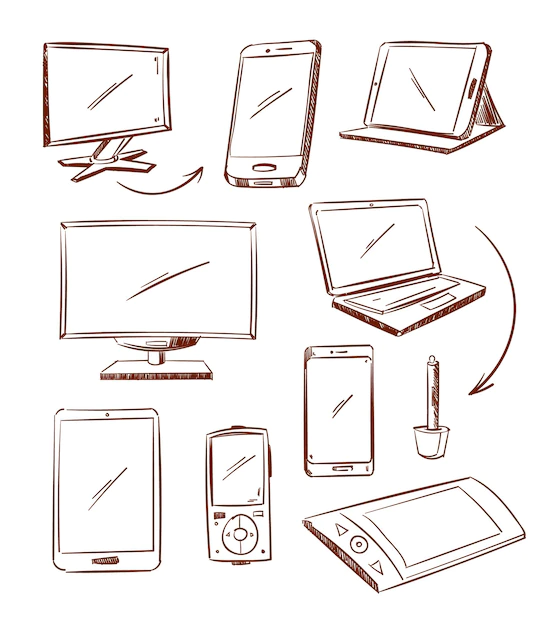

¿Que es la computacion?
El concepto computación proviene del latín computatĭo, esta hace referencia al cómputo, como cuenta. La computación es la ciencia encargada de estudiar los sistemas, más precisamente computadoras, que automáticamente gestionan información.
Dentro de las ciencias de la computación pueden ser distinguidas distintas áreas de estudio:
-
Estructura de datos y Algoritmos. Un de estudio importante en la computación es el de la estructura de los datos y los algoritmos. Para ello estos dos últimos son analizados para poder solucionar los problemas precisos. En esta área el análisis matemático resulta elemental.
-
Sistemas operativos. Los sistemas operativos también son consideradas una de las áreas más importantes. Son creados y actualizados continuamente para perfeccionar el funcionamiento, mejorando fallas y adaptándolos a las nuevas necesidades del mercado.
-
Arquitectura de computadoras. En lo que respecta al área de arquitectura de la computadora se crean nuevas computadoras, más veloces y con mejores capacidades. La atención suele centrarse en ciertos componentes, como las memorias, CPU y periféricos (de entrada y salida).
-
Lenguajes de programación. Otra área elemental en el estudio de la computación es el de los lenguajes de programación. El objetivo es crear nuevos lenguajes de programación, que sean más eficaces y veloces, con funcionalidades y capacidades superadoras.
-
EL IMPACTO DE LA COMPUTACION EN LA VIDA COTIDIANA
Actualmente las tecnologías computacionales han permitido la reelaboración de los conceptos tradicionales de las actividades, de este modo las tecnologías empezaron a transformar la vida de las personas profundamente y en todas sus actividades:
-
El correo tradicional fue reemplazado por el envío y la recepción de correo electrónico.
-
El arte del dibujante sufrió la modificación y devino en la producción de dibujos digitales.
-
La edición de audio está totalmente digitalizada.
-
La impresión de libros se transformó en la publicación y edición digital en soportes informáticos que son a la vez comercializados vía Internet, entre muchos otros procesos.
-
Es decir, el alcance de la computación es incalculable, la modificación en los procesos de las actividades ya se ha producido y continúa su avance de forma inusitada, transformando constantemente nuestras vidas y originando nuevos requerimientos personales que exigen que estemos al tanto de estos nuevos recursos, tanto para conocer y saber sobre su utilización, cuanto para saber aprovecharlos en pos de un mejor bienestar personal y social.

https://concepto.de/computacion/#:~:text=la%20vida%20cotidiana-,%C2%BFQu%C3%A9%20es%20computaci%C3%B3n%3F,computadoras%2C%20que%20autom%C3%A1ticamente%20gestionan%20informaci%C3%B3n.